Aktuálna ponuka
Nehnuteľnosti, ktoré ponúkam
12 nehnuteľností na predaj a prenájom. Vyberte typ, alebo napíšte lokalitu.
12 z 12 ponúk
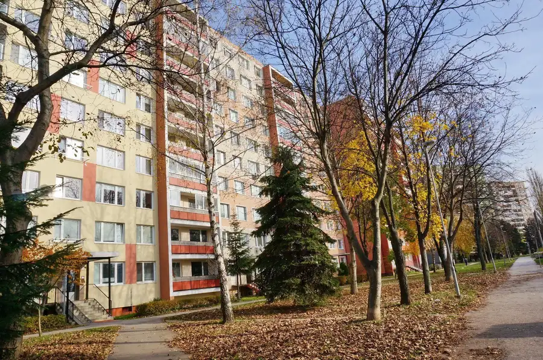
BytPredané2 Predané3-izb. byt na predaj, 68 m2+loggia, Čingovská,Nad jazerom mestská časť Nad jazerom, Košice 3-izbový68 m² Ponúkame na predaj pekný 3 izbový byt na Čingovskej ulici na sídlisku Nad jazerom. Byt o výmere 68 m2 sa nachádza na 6./9 poschodí, je orientovaný na…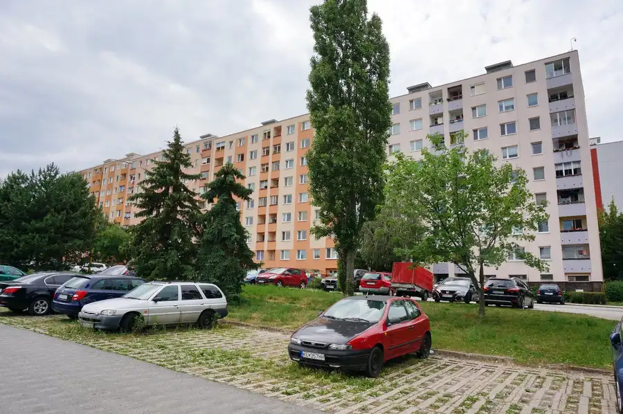
BytPredané7 Predané2 izb.byt v pôvodnom stave, 50 m2, loggia, Klimkovičova mestská časť Sídlisko KVP, Košice 2-izbový50 m²1. podlažie Ponúkame na predaj 2-izbový byt v osobnom vlastníctve na sídlisku KVP na Klimkovičovej ulici. Jedná sa o byt s loggiou (s vchodom z kuchyne) o výmere…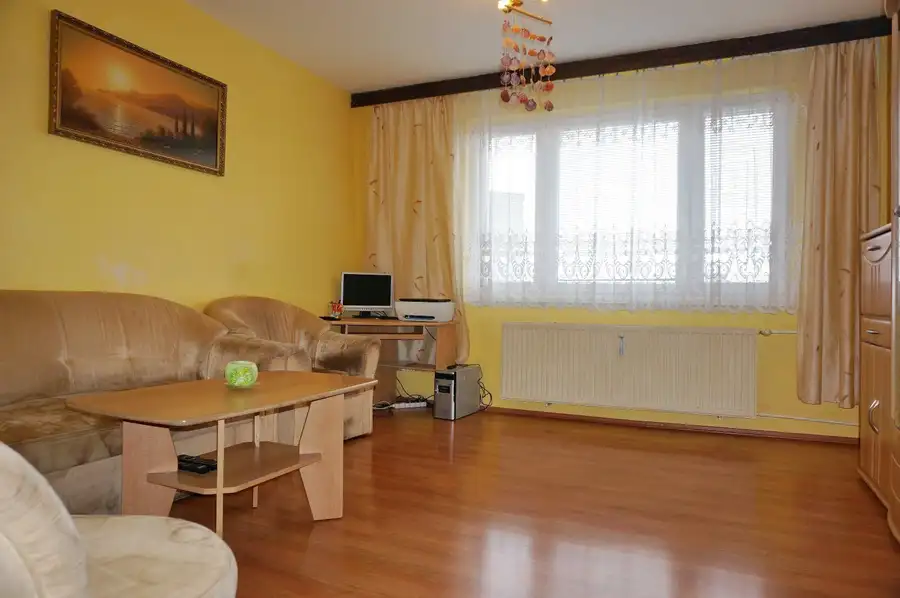
BytPredané6 Predané3 izb.slnečný byt, 65 m2 s loggiou, 6.p.,Hemerkova, KVP mestská časť Sídlisko KVP, Košice 3-izbový62 m² Ponúkame na predaj slnečný 3 izbový byt s pekným výhľadom na Hemerkovej ulici na sídlisku KVP. Byt o výmere 62 m2 sa nachádza na 6./8 poschodí, je…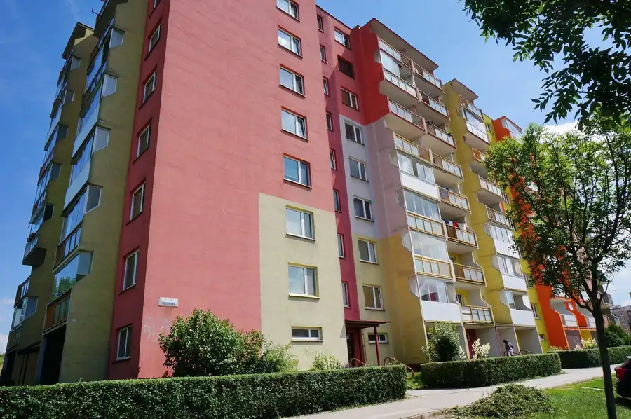
BytPredané10 Predané3 izb.byt s loggiou, 75 m2,Helsinská,Ťahanovce mestská časť Sídlisko Ťahanovce, Košice 3-izbový75 m²5. podlažie Ponúkame na predaj pekný, priestranný a slnečný 3 izbový byt na Helsinskej ulici na sídlisku Ťahanovce. Panelový byt o výmere 74,59 m2 sa nachádza na…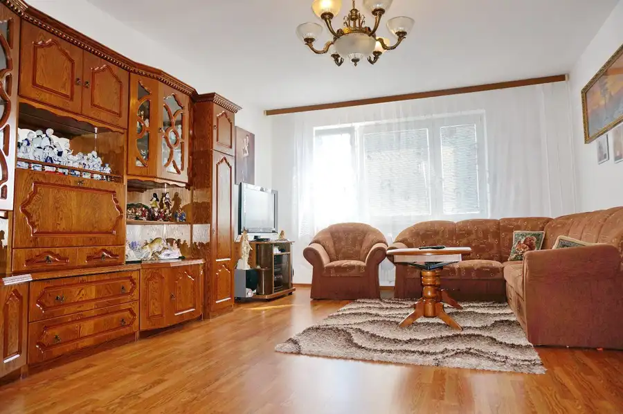
BytPredané10 Predané3 izb.byt s loggiou,80 m2, Hemerkova,KVP, komplet.rek mestská časť Sídlisko KVP, Košice 3-izbový77 m²6. podlažie Exkluzívne ponúkame na predaj pekný, priestranný, slnečný 3 izbový byt s pekným výhľadom na Hemerkovej ulici na sídlisku KVP. Byt o výmere 77 m2 sa…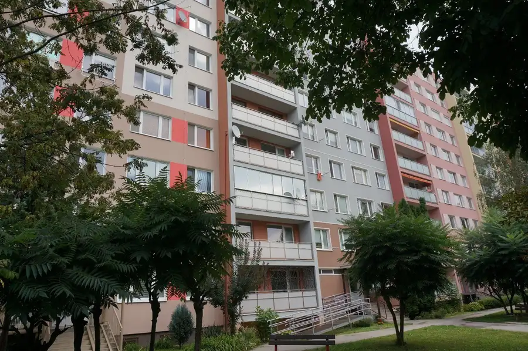
BytPredané10 Predané3 izb.byt, 72 m2 + 6 m2 loggia, Čingovská, Nad jazerom mestská časť Nad jazerom, Košice 3-izbový70.15 m²7. podlažie Exkluzívne ponúkame na predaj pekný 3 izbový byt na Čingovskej ulici na sídlisku Nad jazerom. Byt o výmere 72 m2 vrátane kumbálu na chodbe a pivnice…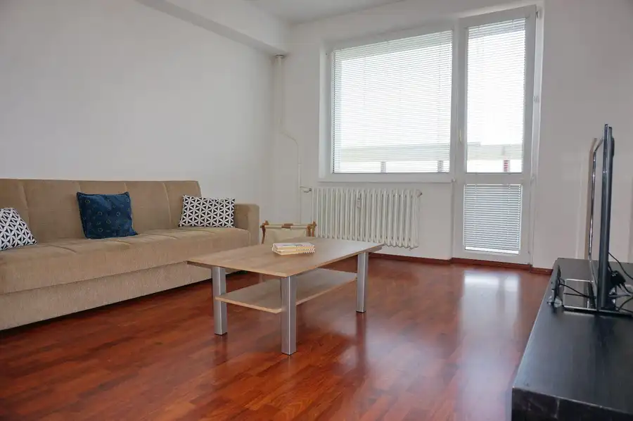
BytPredané10 Predané2 izb. byt, 51 m2 + 4 m2 loggia, Južná trieda mestská časť Juh, Košice 2-izbový51 m²12. podlažie Exkluzívne ponúkame na predaj pekný 2 izbový byt na Južnej triede. Byt o výmere 51 m2 sa nachádza na 12./12 poschodí v obytnom dome s novým výťahom…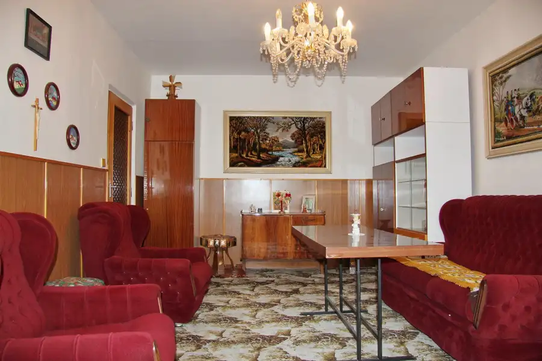
BytPredané10 Predané3 izb byt na Juhu, 64 m2 + 2x loggia, Rosná ul mestská časť Juh, Košice 3-izbový64 m²7. podlažie Exkluzívne ponúkame na predaj pekný 3 izbový byt na Rosnej ulici na sídlisku Juh. Byt o výmere 65,5 m2 vrátane pivnice sa nachádza na 7./13 poschodí,…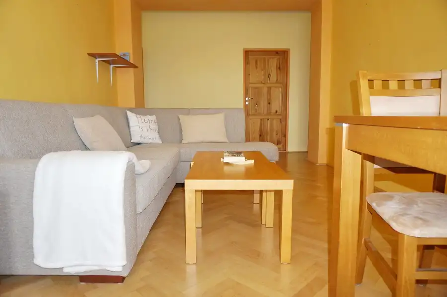
BytPredané10 PredanéSlnečný 3 izb.tehlový byt, 64 m2+loggia, Gerlachovská mestská časť Sever, Košice 3-izbový64 m²3. podlažie Exkluzívne ponúkame na predaj pekný, slnečný, tehlový 3 izbový byt na Gerlachovskej ulici na Podhradovej. Byt o výmere 64 m2 sa nachádza na 3./4…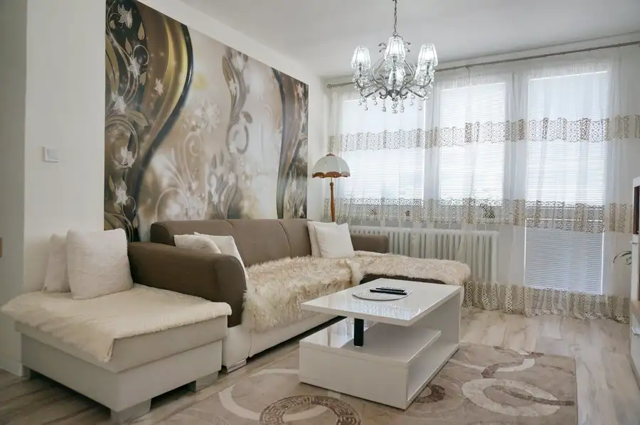
BytPredané10 PredanéKrásny zrekonštruovaný zariadený 3 izb.byt,Terasa, Kežmarská mestská časť Západ, Košice 3-izbový55 m²3. podlažie Exkluzívne ponúkame na predaj krásny, kompletne zrekonštruovaný 3 izbový byt na Kežmarskej ulici na Terase. Byt o výmere 55 m² sa nachádza na 3./3…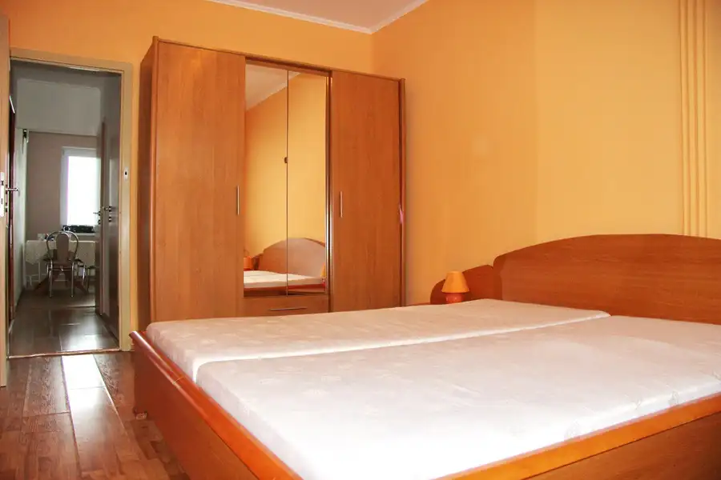
BytPredané10 Predané4 izb.byt s loggiou, 82 m², matuškova, Terasa mestská časť Západ, Košice 4-izbový79 m² Ponúkame na predaj pekný, čistý, priestranný 4 izbový byt na Matuškovej ulici na Terase neďaleko OC Galéria s výbornou dostupnosťou do centra mesta.…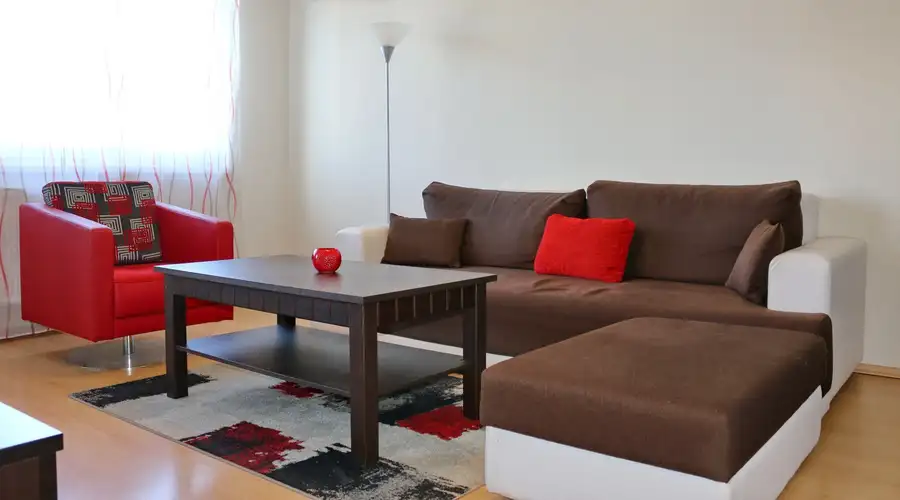
BytPredané10 PredanéNa predaj 3 izb.zariadený byt, 72 m², Terasa, šafárikova mestská časť Západ, Košice 3-izbový68 m² Ponúkame na predaj priestranný 3 izbový zariadený byt na Šafárikovej triede na Terase. Byt s úžitkovou plochou 68 m² sa nachádza na 7./7 poschodí, je…Tomuto výberu zatiaľ nezodpovedá žiadna ponuka. Napíšte mi, čo hľadáte.